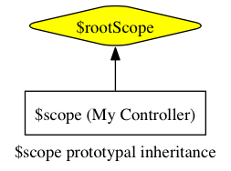
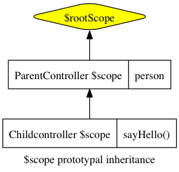
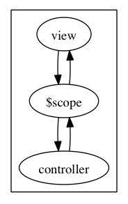

实现了内容与文本框一起改变的功能： 查看效果
代码如下：
<!doctype html>
<html ng-app>
<head>
<script src="../angular.min.js"></script>
</head>
<body>
<div>
<input type="text" ng-model="yourName" placeholder="Enter a name here">
<h1>Hello, {{yourName}}!</h1>
</div>
</body>
</html>
就这样没有任何代码就实现了内容与文本框一起改变的功能：
ng-app标记了一个模块，没有它AngularJs不会起作为。
ng-model="yourName"建立了文本框与模型yourName的双向绑定。
{{yourName}}显示模型的值。
通过实践创建一个项目myApp来学习，把js代码都放在js/radio.js中。
通过angular.module方法定义模块，
var app = angular.module('myApp', []);
这样在页面上可以声明把模块绑定到指定的DOM中：
<!doctype html>
<html ng-app="myApp">
<head>
<script src="../angular.min.js"></script>
<script src="js/radio.js"></script>
</head>
<body>
</body>
</html>
绑定的地方就是AngularJs运行应用的地方。
$scope是一个把view（一个DOM元素）连结到controller上的对象。在我们的MVC结构里，
这个$scope将成为model，它提供一个绑定到DOM元素（以及其子元素）上的excecution
context。
尽管听起来有点复杂，但$scope实际上就是一个JavaScript对象，controller和view都
可以访问它，所以我们可以利用它在两者间传递信息。在这个$scope对象里，我们既存储
数据，又存储将要运行在view上的函数。
每一个Angular应用都会有一个$rootScope。
这个$rootScope是最顶级的scope，它对应着含有ng-app指令属性的那个DOM元素。
如果页面上没有明确设定$scope，Angular就会把数据和函数都绑定到这里，第一部分中
的例子就是靠这一点成功运行的。
在这个例子里，我们将使用$rootScope。在radio.js文件里，我们给这个scope加一个
name属性。把这个函数放进app.run函数里执行，我们就保证了它能在应用的其他部分
之前被执行。你可以把app.run函数看作是Angular应用的main方法。
app.run(function($rootScope) {
$rootScope.name = "Ari Lerner";
});
现在，我们可以在view的任何地方访问这个name属性，使用模版表达式{{}}，像这样
：
{{ name }}
要真正看到scope的强大功能，让我们给一个DOM元素加上controller，它将创建这个元素的
$scope ，让我们跟这个元素互动。
要明确创建一个$scope对象，我们就要给DOM元素安上一个controller对象，使用的是
ng-controller指令属性：
<div ng-controller="MyController">
{{ person.name }}
</div>
ng-controller指令给所在的DOM元素创建了一个新的scope对象，并将这个scope对象
包含进外层DOM元素的scope对象里。在上面的例子里，这个外层DOM元素的$scope对象，
就是$rootScope对象。这个scope链是这样的：

现在，MyController给我们建立了一个可以从DOM元素内部直接访问的scope对象。下面
我们在的这个scope里创建一个person对象，在radio.js中：
app.controller('MyController', function($scope) {
$scope.person = {
name: "Ari Lerner"
};
});
现在我们可以在有ng-controller=’MyController’属性的DOM元素的任何子元素里访问
这个person对象，因为它在$scope上。
页面上显示出：
所有scope都遵循原型继承（prototypal inheritance），这意味着它们
都能访问父scope们。对任何属性和方法，如果AngularJS在当前scope上找不到，就会到父
scope上去找，如果在父scope上也没找到，就会继续向上回溯，一直到$rootScope上。
唯一的例外：有些指令属性可以选择性地创建一个独立的scope，让这个scope不继承它的 父scope们。
举个例子，假设我们有一个ParentController，含有一个person对象，又有一个
ChildController想要访问这个对象：
app.controller('ParentController', function($scope) {
$scope.person = {greeted: false};
});
app.controller('ChildController', function($scope) {
$scope.sayHello = function() {
$scope.person.greeted = true;
}
});
当我们在view里把ChildController绑定到ParentController之下，在子元素里我们
就能访问ParentController创建的父scope的属性，像访问ChildController自己的
scope中的属性一样：
<div ng-controller="ParentController">
<div ng-controller="ChildController">
<input type="text" ng-model="person.name" placeholder="Name"></input>
<a ng-click="sayHello()">Say hello</a>
</div>
{{ person }}
</div>

现在，我们把scope用在我们的NPR应用上。在上一篇结尾我们定义了app module，现在
我们开始深入DOM结构，创建基本功能。
像在上面的例子里展示过的那样，我们先创建一个root controller，命名为
PlayerController。还有一个RelatedController，它将负责管理音频DOM元素、和为
我们取回NPR节目的列表。
回到radio.js，现在我们就来创建这两个controller：
var app = angular.module('myApp', []);
app.controller('PlayerController', ['$scope', function($scope) { }]);
app.controller('RelatedController', ['$scope', function($scope) { }]);
这两个controller现在还没什么功能，那么，让我们给应用先加上点声音吧。在这个教程里 我们将使用HTML5的音频DOM元素，所以首先你得有个支持HTML5的浏览器（我们推荐Google Chrome）。
这个音频DOM元素，我们既可以把它加在HTML里，又可以加在我们的controller里。不过 鉴于我们主要使用controller跟这个音频DOM元素互动，把它创建在controller里更合适。
现在我们就在PlayerController里创建一个音频DOM元素。我们要把它储存在scope上，
然后像你已经学过的那样——通过$scope对象把view和controller连接起来。
app.controller('PlayerController', ['$scope', function($scope) {
$scope.audio = document.createElement('audio');
}]);
这个设定现在可能有点无聊，因为它还不能干什么。我们会在本系列的下一篇介绍取回（
fetching）数据，现在我们先使用一个指定的.mp4网址。
还是在这个PlayerController里，指定音频文件的src属性为一个你能访问的.mp4
网址。方便起见，我们在这里使用一个储存在我们自己服务器上的NPR音频文件，不过其实
你可以指向任何网址。现在设定你的音频src地址如下：
app.controller('PlayerController', ['$scope', function($scope) {
$scope.playing = false;
$scope.audio = document.createElement('audio');
$scope.audio.src = 'http://r3.soundowl.com/3t10.mp3';
}]);
音频不会自己播放，我们必须让它播放。要做到这一点，我们可以简单地使用
$scope.audio.play()，然后HTML5音频DOM元素就会开始播放mp4媒体流。
我们可以给用户提供一个互动元素：创建一个按钮，把它绑定到scope里的一个动作上。 在下一篇里我们会更深入地介绍这一块，不过先看看上面例子里view的HTML：
<div ng-controller="PlayerController">
<button ng-click="play()" class="button" ng-show="!playing">Play</button>
<button ng-click="stop()" class="button alert" ng-show="playing">Stop</button>
Playing audio: <b>{{ playing }}</b>
</div>
注意我们并不需要引用在scope里创建的那个音频DOM元素，因为它是当我们载入controller
时在controller内部用document.createElement("audio")创建的。在之后的教程里我们
会重构这个部分，因为在controller里操作DOM元素一般都不是个好主意（感谢Brad Green
在评论中指出这一点。）然而为了简便，我们在这里还是保持这个controller如此。
在view里我们已经加入了一些变量，在scope上我们要管理这些变量。这里使用了一些高级 概念，这些在本系列之后的教程里才会详细介绍，所以如果你不能一下子全看明白也不用 担心：
app.controller('PlayerController', ['$scope', function($scope) {
$scope.audio = document.createElement('audio');
$scope.audio.src = 'http://r3.soundowl.com/3t10.mp3';
$scope.playing = false;
$scope.play = function() {
$scope.audio.play();
$scope.playing = true;
};
$scope.stop = function() {
$scope.audio.pause();
$scope.playing = false;
};
$scope.audio.addEventListener('ended', function() {
$scope.$apply(function() {
$scope.stop()
});
});
}]);
以上就是对Angular.js的$scope功能的介绍。在下一章，我们会介绍Angular.js的双向
数据绑定。
view与model双向绑定的意思是：view变了，model的内容也会变；model变了，view也跟着 变。

通过ng-model指令把一个文本框绑定到person.name属性上：
<div ng-controller="MyController">
<input type="text" ng-model="person.name" placeholder="Enter your name" />
<h5>Hello {{ person.name }}</h5>
</div>
现在我们把model的值放在后端的js文件里，每秒刷新：
var app = angular.module('myApp', []);
app.controller('MyController', function($scope) {
$scope.person = { name: "Ari Lerner" };
var updateClock = function() { $scope.clock = new Date(); };
var timer = setInterval(function() { $scope.$apply(updateClock); }, 1000);
updateClock();}
);
显示的view在页面上：
<!doctype html>
<html ng-app="myApp">
<head>
<script src="../angular.min.js"></script>
<script src="js/bind.js"></script>
</head>
<body>
<div ng-controller="MyController">
<h5>{{ clock }}</h5>
</div>
</body>
</html>
不光是把数据绑定到用于显示的view上，还可以把函数绑定到DOM元素上。不仅是按钮，
链接等，任何DOM元素都可以通过ng-click绑定鼠标点击事件调用的函数（即浏览器通用
的mousedown事件）。
方法被绑定到controller所有的$scope对象上。注意要将方法名写进带引号的字符串里：
<div ng-controller="DemoController">
<h4>The simplest adding machine ever</h4>
<button ng-click="add(1)" class="button">Add</button>
<button ng-click="subtract(1)" class="button">Subtract</button>
<h4>Current count: {{ counter }}</h4>
</div>
调用的方法：
app.controller('DemoController', function($scope) {
$scope.counter = 0;
$scope.add = function(amount) { $scope.counter += amount; };
$scope.subtract = function(amount) { $scope.counter -= amount; };
});
Angular.js通过一个$http服务提供了多种方式来调用AJAX。
所有Angular.js的核心服务都用$前缀。
app.controller('PlayerController', function($scope, $http) {
$http({ method: 'JSONP',
url: 'http://api.openbeerdatabase.com/v1/beers.json?callback=JSON_CALLBACK'
}).success(function(data, status, headers, config) {
// data contains the response
// status is the HTTP status
// headers is the header getter function
// config is the object that was used to create the HTTP request
$scope.programs = data;
}).error(function(data, status, headers, config) {});
}
注意， 像上面例子中那样，原封不动加上以下字符串callback=JSON_CALLBACK，
Angular.js就会负责为你处理JSONP请求，将JSON_CALLBACK替换成一个合适的回调函数。
<div ng-controller="PlayerController">
{{ programs }}
</div>
要调用NPR电脑的API要先注册申请一个API Key：http://www.npr.org/templates/reg/
然后就可以取得节目列表：
var apiKey = 'MDEyNDkyMTc4MDEzODMxMTI3MTkxMjU5OQ001';
var nprUrl = 'http://api.npr.org/query?id=61&fields=relatedLink,title,byline,text,audio,image,pullQuote,all&output=JSON';
app.controller('PlayerController', function($scope, $http) {
// Hidden our previous section's content
// construct our http request
$http({
method: 'JSONP',
url: nprUrl + '&apiKey=' + apiKey + '&callback=JSON_CALLBACK'
}).success(function(data, status) {
// Now we have a list of the stories (data.list.story)
// in the data object that the NPR API
// returns in JSON that looks like:
// data: { "list": {
// "title": ...
// "story": [
// { "id": ...
// "title": ...
$scope.programs = data.list.story;
}).error(function(data, status) {
// Some error occurred
});
});
页面上显示：
<div ng-controller="PlayerController">{{ programs }}</div>
目前为止，我们已提到过几次“指令属性”的概念，但从未深入探讨过它到底是什么。实际上 ，“指令属性”就是绑定在DOM元素上的函数，它可以调用方法、定义行为、绑定controller 及$scope对象、操作DOM，等等等等。
当浏览器启动、开始解析HTML（像平时一样）时，DOM元素上的指令属性就会跟其他属性 一样被解析。
当一个Angular.js应用启动，Angular编译器就会遍历DOM树（从有ng-app指令属性的那个
DOM元素开始，如我们在本系列第一篇里所提过的），解析HTML，寻找这些指令属性函数。
当在一个DOM元素上找到一个或多个这样的指令属性函数，它们就会被收集起来、排序， 然后按照优先级顺序被执行。
每个指令属性都有自己的优先级，在我们关于 指令属性的专题文章里 ，你可以找到更深入的信息。
Angular.js应用的动态性和响应能力，都要归功于指令属性。之前我们已经看过一些指令
属性的用例，如ng-model让标题中的文本与输入框绑定：
<input ng-model="name" name="Name" placeholder="Enter your name"/>
<h4>Your name: {{ name }}</h4>
ng-model指令属性，被用来将DOM文本输入框的值，跟controller里的$scope model
绑定起来。具体的实现过程，是在这个值上绑定了一个$watch函数（类似JavaScript里的
事件监听函数）。
$watch函数（在使用时）运行在Angular.js的事件循环
（即$digest循环）里，让Angular.js能够对DOM进行相应的更新。请关注我们关于
$digest循环的高级文章！
在Angular.js应用的开发中，我们用指令属性来将行为绑定到DOM上。指令属性的使用，是 一个应用能否拥有动态性、响应能力的关键。
{{ 表达式 }}
这个双大括号指令属性，使用$watch()函数，给括号内的表达式注册了一个监听器。正是
这个$watch函数，让Angular.js能够实时自动更新view。
要想理解指令属性的运作，我们必须先理解表达式，在之前的例子里我们已经见过表达式，
例如{{ person.name }}和{{ clock }}。
{{ 8 + 1 }} // 9
{{ person }} // {"name":"Ari Lerner"}
{{ 10 * 3.3 | currency }} // $33.00
最后的例子里(10 * 3.3 | currency)用了一个过滤器。本系列之后的部分，会深入介绍
过滤器。
表达式粗略来看有点像eval(javascript)的结果。它们会经过Angular.js的处理，从而
拥有以下重要而独特的性质：
$scope中的变量。
表达式都运行在调用它们的scope里，所以一个表达式可访问并操作其scope上的一切。由此
，你可以使用表达式遍历其scope的属性（我们在ng-repeat中会看到这一应用）、调用
scope里的函数，或者对scope中的变量进行数学运算。
ng-init指令属性是一个在启动时运行的函数（在程序进入运行阶段之前）。它让我们能够 在程序运行前设定初始变量的值：
<b ng-init='name = "Ari Lerner"'>Hello, {{ name }}</b>
ng-click指令属性给DOM元素注册了一个点击事件的监听器。当此DOM元素上有点击事件发生 （即当此button或link被点击时），Angular.js就会执行表达式的内容，并相应地更新view 。
<button ng-click="counter = counter + 1">Add one</button>
Current counter: {{ counter }}
我们也可以用ng-click来调用在controller里写好并绑定在$scope上的函数，例如：
<div ng-controller="MyController"> <button ng-click="sayHello()">Say hello</button> </div>
controller 里的函数:
app.controller('MyController', function($scope) {
$scope.sayHello = function() {
alert("hello!");
}
});
ng-show和ng-hide指令，根据赋予它们的表达式的值的真假性(truthy)，来显示和隐藏它们 所属的那一部分DOM。
我们在这里不会深入，但你应该熟悉JavaScript中变量值的truthy和falsy概念。
<button ng-init="shouldShow = true" ng-click="shouldShow = !shouldShow">
Flip the shouldShow variable
</button>
<div ng-show="shouldShow">
<h3>Showing {{ shouldShow }}</h3>
</div> <div ng-hide="shouldShow">
<h3>Hiding {{ shouldShow }}</h3>
</div>
ng-repeat指令遍历一个数据集合中的每个数据元素，加载HTML模版把数据渲染出来。被 重复使用的模版元素，就是我们绑定了这个指令属性的DOM元素。每一个使用模版渲染的DOM 元素都有自己的scope。
在更多的解释之前，我们先看一个例子。假设我们的controller里有这样一个数据元素的 数组：
$scope.roommates = [
{ name: 'Ari'},
{ name: 'Q'},
{ name: 'Sean'},
{ name: 'Anand'}
];
<ul>
<li ng-repeat="person in roommates">{{ person.name }}</li>
</ul>
对赋予ng-repeat的表达式稍作改动，我们还可以用它遍历一个由成对的key-value数据组成 的集合。例如，假设我们有一个人名和他们最喜欢的颜色的数据集合：
$scope.people = {
'Ari': 'orange',
'Q': 'purple',
'Sean': 'green'
}
要遍历它，我们可以给ng-repeat指令属性赋予这个表达式: (key, value) in object:
<ul>
<li ng-repeat="(name, color) in people">
{{ name }}'s favorite color is {{ color }}
</li>
</ul>
Angular.js提供的直接可用的指令属性并不多，但它让我们可以很容易地创建自己的指令 属性。请到这里查看我们的 指令属性创建指南
在上一篇中，我们的收音机应用只从NPR API取回了最新的音频节目列表：
$scope.programs = data.list.story;
现在我们学了遍历一个list的实现方法，可以在我们的收音机应用里，像刚才那样用 ng-repeat来遍历这个节目列表了：
<ul id="programs_list" class="">
<li ng-repeat="program in programs">
<span class="large-12">{{ program.title.$text }}</span>
</li>
</ul>
NPR API给我们的是一个有title+$text的列表，这个结构是NPR API所特有的，而不是
Angular.js的。
现在我们列出了节目和它们的标题，但还不能点击并播放它们。用ng-click我们可以给HTML 元素加上一个点击功能：
<ul id="programs_list" class="">
<li ng-repeat="program in programs" ng-click="play(program)">
<span class="large-12">{{ program.title.$text }}</span>
</li>
</ul>
通过这一步，我们把一个play动作函数绑定到了列表里的<li>DOM元素上。现在，我们在
PlayerController里创建这个play动作函数，然后我们就有了一个功能完备的音频应用：
// format.mp4.$text is the route to the mp4 file from the NPR api
$scope.play = function(program) {
if ($scope.playing) $scope.audio.pause();
var url = program.audio[0].format.mp4.$text;
$scope.audio.src = url;
$scope.audio.play();
// Store the state of the player as playing
$scope.playing = true;
}
现在这个应用功能完备了，但是还不太好看。而且随着我们继续添加新功能，代码也会膨胀 ，变得难以管理。我们可以创建自己的指令属性，来帮助我们减少复杂性。
想更多地学习自定义指令属性，可以看看我们 深入探讨指令属性的文章
创建自定义指令属性，我们使用app对象的directive方法：
app.directive('nprLink', function() {
return {
restrict: 'EA',
require: ['^ngModel'],
replace: true,
scope: {
ngModel: '=',
play: '&'
},
templateUrl: 'views/nprListItem.html',
link: function(scope, ele, attr) {
scope.duration = scope.ngModel.audio[0].duration.$text;
}
}
});
我们不会逐个解释每个选项的意义，因为我们有一篇 专门的深入文章 来介绍它们。这里我们只需要明白：
nprLink
templateUrl对应views/nprListItem.html
现在，我们的主HTML文件可以保持整洁，而将用来渲染列表内容的view，创建在这个单独 提取出来的模版文件里：
<div class="nprLink row" ng-click="play(ngModel)">
<span class="name large-8 columns">
<button class="large-2 small-2 playButton columns">
<div class="triangle">play</div>
</button>
<div class="large-10 small-10 columns">
<div class="row">
<span class="large-12">{{ ngModel.title.$text }}</span>
</div>
<div class="row">
<div class="small-1 columns">Go Page:</div>
<div class="small-2 columns push-8">
<a href="{{ ngModel.link[0].$text }}">Link</a>
</div>
</div>
</div>
</span>
</div>
注意我们在模版文件里用ngModel来指向之前的program数据，因为在创建自定义指令
属性时，我们做了设置。
现在，我们在主HTML文件里就不用再写上面那么多HTML，而只要简单地换上我们的自定义
指令属性npr-link：
<ul id="programs_list" class=""> <li ng-repeat="program in programs"> <span npr-link play='play(program)' ng-model="program"></span> </li> </ul>